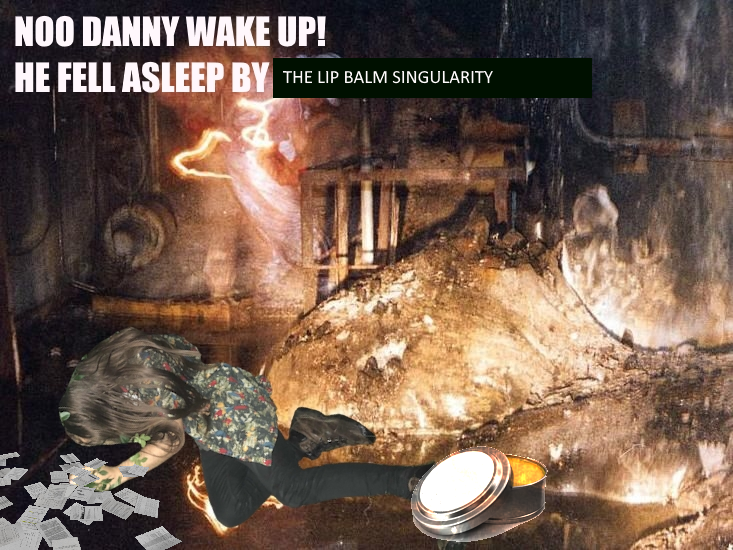

EXPLOSION ROCKS LOCAL LIP BALM FACTORY
A HORRIBLE ACCIDENT? OR A CALCULATED CATASTROPHE?.



Tragedy struck yesterday in Sheffield when an explosion ripped through the city’s beloved lip balm factory, sending shockwaves through the whole community. Emergency services rushed to the scene, where a fragrant mist reportedly hung in the air. It smelled like strawberry and a hint of disappointment.Authorities say the cause of the blast remains unclear, but most experts agree it was most likely a machinery malfunction. One factory worker, covered head to toe in a suspiciously glossy sheen, with a shellshocked expression muttered only: “Too much balm… far too much balm.” The aftermath was surreal as entire streets were coated in a slippery residue, making it impossible to walk without gliding gracefully into oncoming trams.
Naturally, Danny Cooper was spotted at the scene, handing out ever-mysterious flyers. Onlookers remain divided about what was printed on them some theories include safety instructions, others suggest they were applications for Danny’s new “Lip Balm Explosion Survivors Club.” One local resident swore blind they were risqué photographs of Danny posing amongst the debris, strategically covering his undesirables with a singular Burt’s Bees tube.
Officials have urged the public to remain calm, assuring everyone that emergency lip balm supplies are being sourced. “This community will not be left with chapped lips,” promised Kier Starmer at a press conference.
As the dust settles, the people are left to ask the eternal question: was this truly an accident, or simply the inevitable consequence of flying too close to the moisturized sun?